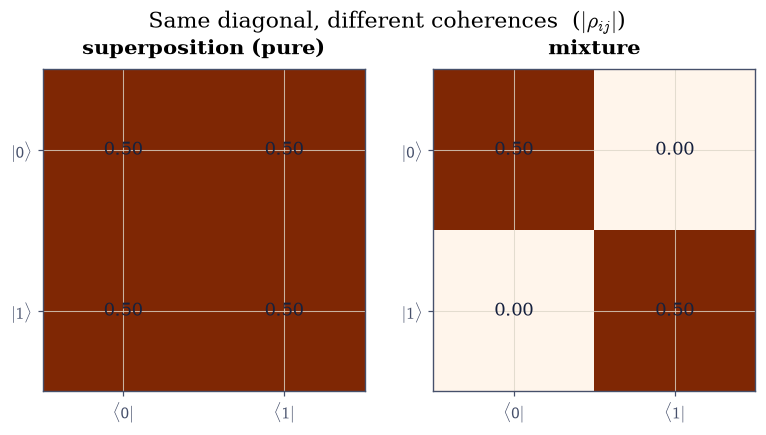
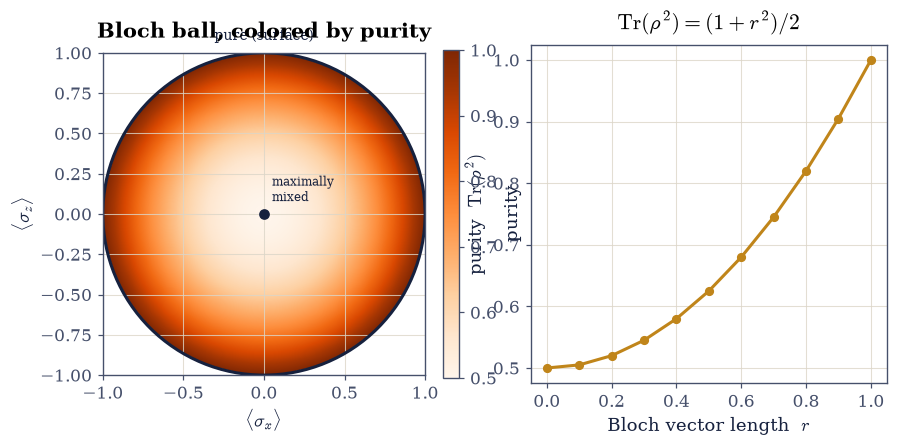
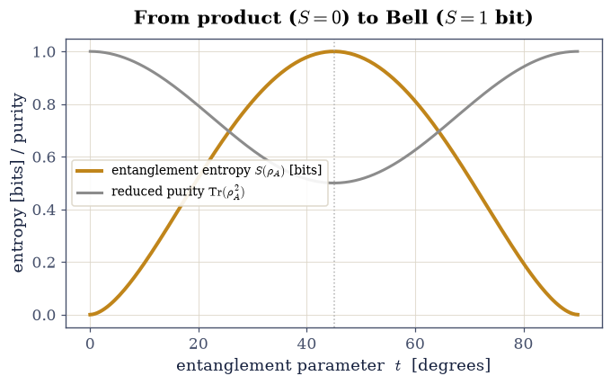
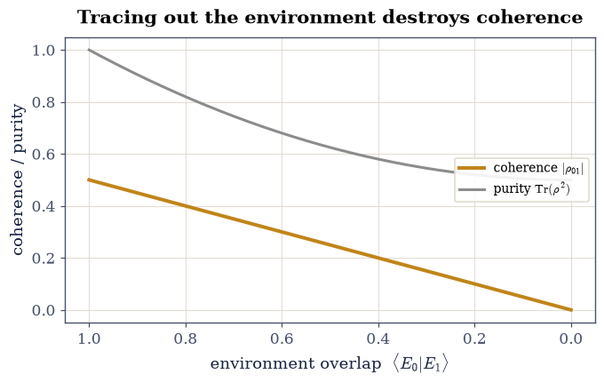
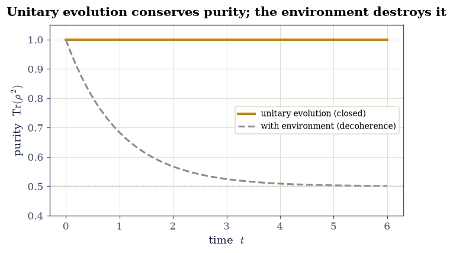

6.26 The Density Matrix, Mixed States, and Decoherence#
Notebook overview#
A puzzle has run through this movement: what is the state of one half of an entangled pair? The Bell state (§6.8) and the Bell inequality (§6.25) kept showing single-particle marginals that looked completely random, yet no state vector for a single particle reproduces that. A state vector \(|\psi\rangle\) describes a system we know as well as quantum mechanics allows — a pure state — but two situations escape it: a statistical mixture (we are classically uncertain which pure state we have, like an unpolarized beam) and a subsystem of an entangled whole (where no state vector for the part exists at all). The density operator \(\rho\) handles both.
For a pure state \(\rho=|\psi\rangle\langle\psi|\); for a mixture \(\rho=\sum_i p_i |\psi_i\rangle\langle\psi_i|\). It is Hermitian, positive, and unit-trace, and every prediction follows from it, \(\langle A\rangle=\mathrm{Tr}(\rho A)\). Crucially \(\rho\) distinguishes a coherent superposition from a mixture — the superposition carries nonzero off-diagonal coherences and a definite value in a rotated basis, the mixture does not — a distinction a bare list of probabilities erases. The purity \(\mathrm{Tr}(\rho^2)\) diagnoses which. For a composite system the state of one part is the reduced density matrix \(\rho_A=\mathrm{Tr}_B\rho\), and here the deep fact surfaces: a pure entangled whole has mixed parts. The reduced state of a Bell pair is maximally mixed (purity \(\tfrac12\), von Neumann entropy \(1\) bit) — which is exactly why the marginals of §6.8 and §6.25 were random. That entropy measures the entanglement. Finally decoherence: when a superposition entangles with an environment we then ignore, its coherences decay and it becomes a classical mixture — the mechanism of the quantum-to-classical transition, and the practical adversary of every qubit.
Scope boundary. We develop \(\rho\) for entanglement, mixed states, and decoherence. The same object also carries a thermal weight, \(\rho=e^{-\beta H}/Z\), and is the starting point of quantum statistical mechanics — but the thermal state, partition functions, and the Fermi–Dirac / Bose–Einstein distributions are deferred to Volume VII. Here \(\rho\) is the language of entanglement. Lindblad / open-system dynamics and quantum channels are named as horizons, not developed.
Method specificity. \(\rho=|\psi\rangle\langle\psi|\) via
numpy.outer; \(\langle A\rangle=\mathrm{Tr}(\rho A)\) vianumpy.trace; the partial trace vianumpy.reshape+numpy.traceover the traced indices; the von Neumann entropy fromnumpy.linalg.eigvalsh; andscipy.linalg.expmfor the von Neumann evolution. Entropy is in bits (\(\log_2\)).
Theory in brief#
Why a state vector is not enough#
\(|\psi\rangle\) describes a pure state — maximal knowledge. But an unpolarized beam (a classical 50/50 mixture of up and down) and one half of an entangled pair cannot be written as any single \(|\psi\rangle\). We need an object for mixtures and subsystems.
The density operator#
For a pure state \(\rho=|\psi\rangle\langle\psi|\); for a mixture of pure states \(|\psi_i\rangle\) with classical probabilities \(p_i\),
and every prediction is \(\langle A\rangle=\mathrm{Tr}(\rho A)\) (equal to \(\langle\psi|A|\psi\rangle\) for a pure state); the diagonal entries are outcome probabilities.
Superposition versus mixture#
The essential lesson. The pure superposition \((|0\rangle+|1\rangle)/\sqrt2\) and the mixture \(\tfrac12|0\rangle\langle0|+\tfrac12|1\rangle\langle1|\) have the same diagonal (50/50 in the computational basis) but different off-diagonals:
The superposition’s off-diagonal coherences make it give a definite result in a rotated basis (\(\langle\sigma_x\rangle=1\)); the mixture stays random (\(\langle\sigma_x\rangle=0\)). They are physically distinct states.
Purity#
The purity \(\mathrm{Tr}(\rho^2)\) is \(1\) iff \(\rho\) is pure, and smaller for mixed states, down to \(1/d\) for the maximally mixed state.
The Bloch sphere of §6.8, now filled in: pure states on the surface, mixed states in the interior.
The reduced density matrix and the partial trace#
For a composite system \(AB\), the state of \(A\) alone is the reduced density matrix obtained by the partial trace over \(B\),
computed by reshaping to \((d_A,d_B,d_A,d_B)\) and tracing the \(B\) indices. It gives the correct statistics for any measurement on \(A\) alone.
Entanglement makes parts mixed#
The deep result. For a Bell state the whole is pure but each part is maximally mixed:
A pure entangled state has mixed subsystems — exactly why the single-particle marginals of §6.8 and §6.25 are random. The von Neumann entropy \(S(\rho)\) is \(0\) for a pure state and \(1\) bit for a maximally mixed qubit; for a pure bipartite state \(S(\rho_A)\) is the entanglement entropy.
Decoherence#
How the classical world emerges. Let a superposition entangle with an environment that records which state it is in, \((|0\rangle|E_0\rangle+|1\rangle|E_1\rangle)/ \sqrt2\); tracing out the environment leaves a system coherence proportional to the overlap \(\langle E_0|E_1\rangle\):
As the environment distinguishes the states, the coherences decay and the pure superposition becomes a classical mixture (purity \(1\to\tfrac12\)) — why macroscopic superpositions are never seen, and why qubits must be isolated.
Evolution of the density matrix#
For a closed system, \(\rho(t)=U(t)\rho(0)U^\dagger(t)\), equivalently the von Neumann equation
the density-matrix form of the Schrödinger equation. Under unitary evolution purity is conserved — mixing never arises from closed dynamics, only from tracing out an environment (decoherence) or classical ignorance.
Reference: Sakurai & Napolitano (§3.4); Nielsen & Chuang [NC10] (density matrices, partial trace, von Neumann entropy); Griffiths [GS18] (mixed states). Cross-reference §6.8 (the Bloch sphere, now filled in; the Bell reduced state), §6.25 (the random Bell marginals, now explained), §6.5 (the Born rule), §6.7 (unitary evolution, now for \(\rho\)), and forward to §6.27 (quantum information) and Volume VII (the thermal density matrix — the deferred home). Named as horizons: Lindblad / open-system dynamics, quantum channels, the thermal state.
Setup#
We work with qubits (subsystem dimension 2), entropy in bits (\(\log_2\)). Conventions: for a two-qubit state the first factor is \(A\); the partial trace reshapes \(\rho\) to \((d_A,d_B,d_A,d_B)\) and traces the chosen pair of indices. The reusable core:
density_matrix(spec): \(\rho=|\psi\rangle\langle\psi|\) (numpy.outer) from a ket, or \(\sum_i p_i|\psi_i\rangle\langle\psi_i|\) from a list of(p, ket).expectation(rho, A): \(\langle A\rangle=\mathrm{Tr}(\rho A)\) (numpy.trace).partial_trace(rho, keep, dims): the reduced density matrix Eq. 531 (numpy.reshape+numpy.trace).purity(rho): \(\mathrm{Tr}(\rho^2)\).von_neumann_entropy(rho): \(-\sum_k\lambda_k\log_2\lambda_k\) fromnumpy.linalg.eigvalsh.evolve_density(rho, H, t): \(U\rho U^\dagger\) with \(U=e^{-iHt/\hbar}\) (scipy.linalg.expm).
import numpy as np
from scipy.linalg import expm
import matplotlib.pyplot as plt
from ecp import draw, validate
HBAR = 1.0
KET0 = np.array([1.0, 0.0], dtype=complex)
KET1 = np.array([0.0, 1.0], dtype=complex)
SIGMA_X = np.array([[0.0, 1.0], [1.0, 0.0]], dtype=complex)
SIGMA_Y = np.array([[0.0, -1j], [1j, 0.0]], dtype=complex)
SIGMA_Z = np.array([[1.0, 0.0], [0.0, -1.0]], dtype=complex)
def density_matrix(spec):
r"""Density operator from a pure ket or a classical mixture.
A pure state gives $\rho=|\psi\rangle\langle\psi|$ via `numpy.outer`; a list of
``(p, ket)`` pairs gives the mixture $\sum_i p_i|\psi_i\rangle\langle\psi_i|$
{eq}`eq-density-operator`.
Parameters
----------
spec : numpy.ndarray or list of (float, numpy.ndarray)
Either a state vector, or ``[(p_i, psi_i), ...]`` with probabilities.
Returns
-------
numpy.ndarray
The density matrix.
"""
if isinstance(spec, list):
return sum(p * np.outer(psi, psi.conj()) for p, psi in spec)
return np.outer(spec, spec.conj())
def expectation(rho, A):
r"""Expectation value $\langle A\rangle=\mathrm{Tr}(\rho A)$ (`numpy.trace`)."""
return float(np.real(np.trace(rho @ A)))
def partial_trace(rho, keep, dims):
r"""Reduced density matrix by the partial trace {eq}`eq-partial-trace`.
Reshapes $\rho$ to ``(dA, dB, dA, dB)`` and traces out the subsystem *not* in
``keep`` with `numpy.trace`.
Parameters
----------
rho : numpy.ndarray
The joint density matrix.
keep : int
Which subsystem to keep (0 = A, 1 = B).
dims : tuple of int
``(dA, dB)`` subsystem dimensions.
Returns
-------
numpy.ndarray
The reduced density matrix of the kept subsystem.
"""
dA, dB = dims
r = rho.reshape(dA, dB, dA, dB)
if keep == 0:
return np.trace(r, axis1=1, axis2=3) # trace out B
return np.trace(r, axis1=0, axis2=2) # trace out A
def purity(rho):
r"""Purity $\mathrm{Tr}(\rho^2)$ {eq}`eq-purity`: 1 for pure, $1/d$ for maximally mixed."""
return float(np.real(np.trace(rho @ rho)))
def von_neumann_entropy(rho):
r"""Von Neumann entropy $S=-\sum_k\lambda_k\log_2\lambda_k$ in bits.
The eigenvalues come from `numpy.linalg.eigvalsh`; zero (and tiny negative,
round-off) eigenvalues are dropped, since $0\log0=0$.
Parameters
----------
rho : numpy.ndarray
A density matrix.
Returns
-------
float
The entropy in bits.
"""
lam = np.linalg.eigvalsh(rho)
lam = lam[lam > 1e-12]
return float(-np.sum(lam * np.log2(lam)))
def evolve_density(rho, H, t):
r"""Unitary (von Neumann) evolution $U\rho U^\dagger$, $U=e^{-iHt/\hbar}$ (`scipy.linalg.expm`)."""
U = expm(-1j * H * t / HBAR)
return U @ rho @ U.conj().T
Exercise 1 — The density operator and its properties#
Build the density matrix for a pure state and for a mixture, and verify its defining properties: Hermitian, positive, unit-trace, and \(\langle A\rangle=\mathrm{Tr}(\rho A)\).
Form \(\rho=|\psi\rangle\langle\psi|\) (
numpy.outer) for a pure state and \(\rho=\sum_i p_i|\psi_i\rangle\langle\psi_i|\) for a mixture.Check Hermiticity, positivity (eigenvalues \(\ge0\)), and \(\mathrm{Tr}\,\rho=1\).
Confirm \(\langle A\rangle=\mathrm{Tr}(\rho A)\) equals \(\langle\psi|A|\psi\rangle\) for the pure case (
numpy.trace).Note the diagonal entries are outcome probabilities.
Cite Eq. 528.
pure: Hermitian=True, positive=True, Tr=1.000000
mixed: Hermitian=True, positive=True, Tr=1.000000
⟨σz⟩: Tr(ρA) = 0.362358 ⟨ψ|A|ψ⟩ = 0.362358
Validation 1#
The density operator must be Hermitian, positive, and unit-trace, and the trace formula must reproduce the state-vector expectation: \(\mathrm{Tr}(\rho A)=\langle \psi|A|\psi\rangle\).
✓ the density operator is Hermitian, positive, and unit-trace
✓ expectation values are ⟨A⟩ = Tr(ρA) [got 0.362358 vs expected 0.362358 (rtol=1e-09)]
True
Exercise 2 — Superposition versus mixture#
Show that a coherent superposition and a statistical mixture with the same measurement probabilities in one basis are nonetheless different states — the difference lives in the off-diagonal coherences.
Build \(\rho\) for the superposition \((|0\rangle+|1\rangle)/\sqrt2\) and for the 50/50 mixture \(\tfrac12|0\rangle\langle0|+\tfrac12|1\rangle\langle1|\).
Compare their matrices: same diagonal, different off-diagonal.
Compute the purity of each (\(1\) vs \(\tfrac12\)).
Measure \(\langle\sigma_x\rangle\): definite (\(1\)) for the superposition, random (\(0\)) for the mixture — a measurable difference.
superposition ρ:
[[0.5 0.5]
[0.5 0.5]]
mixture ρ:
[[0.5 0. ]
[0. 0.5]]
purity: superposition = 1.000 mixture = 0.500
⟨σx⟩: superposition = 1.000 mixture = 0.000
findfont: Failed to find font weight 600, now using 700.

Fig. 508 Coherence is the difference. The coherent superposition \((|0\rangle+|1\rangle)/\sqrt2\) (left) and the 50/50 statistical mixture (right) have identical diagonals — both give 50/50 outcomes in the computational basis — but the superposition carries nonzero off-diagonal coherences (the bright corners) that the mixture lacks. Those coherences are physical: measured along \(x\) the superposition gives a definite \(\langle\sigma_x\rangle=1\) while the mixture stays random at \(0\). A bare list of probabilities would erase the distinction; the density matrix keeps it.#
Validation 2#
The superposition is pure (purity \(1\), coherences present) and the mixture is mixed (purity \(\tfrac12\)); they differ measurably in \(\langle\sigma_x\rangle\).
✓ a superposition is pure (coherences present) and a 50/50 mixture is mixed [max|Δ| = 4.44089e-16 (rtol=1e-09, atol=1e-09)]
✓ the superposition gives ⟨σx⟩=1 (definite) while the mixture gives 0 (random)
True
Exercise 3 — Purity and the Bloch ball#
Relate the purity to position in the Bloch ball: pure states on the surface, mixed states in the interior, maximally mixed at the center.
Parametrize a qubit state by its Bloch vector \(\mathbf r\): \(\rho=\tfrac12(I+ \mathbf r\cdot\boldsymbol\sigma)\).
Compute the purity as a function of the Bloch length \(r=|\mathbf r|\).
Show purity \(=1\) on the surface (\(r=1\), pure) and \(=\tfrac12\) at the center (\(r=0\), maximally mixed).
Confirm the closed form \(\mathrm{Tr}(\rho^2)=(1+r^2)/2\).
Cite Eq. 530.
purity vs Bloch length r:
r=0.0: purity=0.5000 (1+r²)/2=0.5000
r=0.2: purity=0.5200 (1+r²)/2=0.5200
r=0.4: purity=0.5800 (1+r²)/2=0.5800
r=0.6: purity=0.6800 (1+r²)/2=0.6800
r=0.8: purity=0.8200 (1+r²)/2=0.8200
r=1.0: purity=1.0000 (1+r²)/2=1.0000
findfont: Failed to find font weight 600, now using 700.

Fig. 509 The Bloch sphere, filled in. Left: a cross-section of the Bloch ball colored by purity — pure states live on the surface (\(r=1\), purity \(1\)), mixed states fill the interior, and the center (\(r=0\)) is the maximally mixed state (purity \(\tfrac12\)). This is the Bloch sphere of §6.8 with mixedness as depth. Right: the purity \(\mathrm{Tr}(\rho^2)=(1+r^2)/2\) rises smoothly from \(\tfrac12\) at the center to \(1\) at the surface. A density matrix is a point in the ball, not just on it.#
Validation 3#
The qubit purity must follow \((1+r^2)/2\): \(\tfrac12\) at the center (maximally mixed) and \(1\) on the Bloch surface (pure).
✓ qubit purity is (1+r²)/2 — pure on the Bloch surface, maximally mixed at the center [max|Δ| = 1.11022e-16 (rtol=1e-09, atol=1e-09)]
True
Exercise 4 — The reduced density matrix#
Compute the state of one subsystem of a two-qubit system by the partial trace, and confirm it reproduces local measurement statistics.
Take a two-qubit product state \(|\psi\rangle_A\otimes|\phi\rangle_B\).
Implement the partial trace over \(B\) (
numpy.reshapeto \((2,2,2,2)\) +numpy.traceof the \(B\) indices).Verify \(\rho_A\) is a valid density matrix (Hermitian, positive, unit-trace).
Confirm \(\mathrm{Tr}(\rho_A A)=\mathrm{Tr}(\rho_{AB}\,A\otimes I)\) for a local observable — the reduced state gives the right local statistics.
Cite Eq. 531.
reduced ρ_A:
[[0.77 0.421]
[0.421 0.23 ]]
valid: Tr=1.0000, positive=True
⟨σz⟩ on A: from ρ_A = 0.540302 from ρ_AB (σz⊗I) = 0.540302
Validation 4#
The partial trace must yield a valid density matrix for \(A\) that reproduces local expectation values: \(\mathrm{Tr}(\rho_A\,\sigma_z)=\mathrm{Tr}(\rho_{AB}\,\sigma_z \otimes I)\).
✓ the reduced density matrix ρ_A = Tr_B ρ reproduces local expectation values [got 0.540302 vs expected 0.540302 (rtol=1e-09)]
✓ the partial trace yields a valid density matrix (positive, unit-trace)
True
Exercise 5 — A pure whole with mixed parts: entanglement entropy#
Show that a Bell state is pure but its subsystems are maximally mixed, and quantify with the von Neumann entropy — the deep fact behind the random Bell marginals of §6.8 and §6.25.
Confirm the Bell state \((|00\rangle+|11\rangle)/\sqrt2\) has purity \(1\) (a pure whole).
Compute \(\rho_A=\mathrm{Tr}_B\) and show it is maximally mixed (\(\rho_A=\tfrac12 I\), purity \(\tfrac12\)).
Compute \(S(\rho_A)=-\mathrm{Tr}(\rho_A\log_2\rho_A)=1\) bit.
Connect to §6.8 / §6.25: tracing out the partner leaves no coherence, so each particle alone looks random.
Cite Eq. 532.
Bell whole: purity = 1.0000 (pure)
reduced ρ_A:
[[0.5 0. ]
[0. 0.5]]
ρ_A: purity = 0.5000 S(ρ_A) = 1.0000 bit
→ maximally mixed: this is WHY the single-particle marginals of §6.8/§6.25 are random
Validation 5#
A pure Bell state must have a maximally mixed reduced state: purity \(\tfrac12\) and von Neumann entropy \(1\) bit.
✓ a pure Bell state has a maximally mixed reduced state, S = 1 bit [max|Δ| = 2.22045e-16 (rtol=1e-06, atol=1e-09)]
True
Exercise 6 — Entanglement across a family#
Vary the entanglement of a two-qubit state continuously and track the entanglement entropy from \(0\) (product) to \(1\) bit (Bell).
Build the family \(\cos t\,|00\rangle+\sin t\,|11\rangle\).
For each \(t\) compute \(\rho_A=\mathrm{Tr}_B\) and \(S(\rho_A)\).
Show \(S\) runs from \(0\) at \(t=0\) (product state) to \(1\) bit at \(t=\pi/4\) (Bell).
Note \(S(\rho_A)\) is the entanglement measure — maximal exactly when the state is maximally entangled.
Cite Eq. 532.
S(ρ_A): t=0 → -0.0000 t=π/4 → 1.0000
maximally entangled at t=π/4; product at t=0, π/2

Fig. 510 Entanglement, continuously tuned. For the family \(\cos t\,|00\rangle+\sin t\,|11\rangle\), the entanglement entropy \(S(\rho_A)\) (amber) climbs from \(0\) at the product states (\(t=0,\pi/2\)) to a full bit at the Bell state (\(t=\pi/4\)); the reduced purity (grey) mirrors it, dropping from \(1\) to \(\tfrac12\). The more entangled the whole, the more mixed — and higher-entropy — each part. The entropy of a subsystem is the amount of entanglement.#
Validation 6#
The entanglement entropy must run from \(0\) (product state, \(t=0\)) to \(1\) bit (Bell state, \(t=\pi/4\)).
✓ the entanglement entropy runs from 0 (product) to 1 bit (Bell) [max|Δ| = 0 (rtol=1e-06, atol=1e-06)]
True
Exercise 7 — Decoherence#
Show that a superposition becomes a classical mixture when it entangles with an environment that is then traced out — the quantum-to-classical mechanism.
Entangle a system superposition with an environment that records its state: \((|0\rangle|E_0\rangle+|1\rangle|E_1\rangle)/\sqrt2\).
Trace out the environment.
Show the system’s off-diagonal coherence is proportional to the overlap \(\langle E_0|E_1\rangle\).
As \(\langle E_0|E_1\rangle\to0\) (the environment distinguishes the states), watch the coherence vanish and the purity drop to \(\tfrac12\) — superposition into mixture.
Cite Eq. 533.
⟨E0|E1⟩ = 1 → 0: coherence 0.500 → 0.000, purity 1.000 → 0.500
the pure superposition (purity 1) decoheres into the classical mixture (purity ½)

Fig. 511 Decoherence is bookkeeping about a partner you stopped following. As an environment increasingly distinguishes the two branches of a superposition — the overlap \(\langle E_0|E_1\rangle\) falling from \(1\) to \(0\) — the system’s off-diagonal coherence (amber) decays to zero and its purity (grey) drops from \(1\) to \(\tfrac12\). The pure superposition has become a classical mixture, with the same diagonal probabilities but no interference. Nothing changed the outcome statistics in the computational basis; what was lost is the coherence, and with it every quantum signature. This is why macroscopic superpositions are never seen and why qubits must be isolated.#
Validation 7#
As the environment overlap goes to zero, the system off-diagonal coherence must decay to \(0\) and the purity drop to \(\tfrac12\): tracing out an entangled environment decoheres a superposition into a mixture.
✓ tracing out an entangled environment decoheres a superposition (off-diagonal 0.5→0, purity 1→½) into a classical mixture
True
Exercise 8 — The von Neumann equation and conservation of purity (student)#
Evolve a density matrix unitarily, confirm it satisfies the von Neumann equation, and show that purity is conserved — closed dynamics never mixes.
Evolve \(\rho(t)=U(t)\rho(0)U^\dagger(t)\) with \(U=e^{-iHt/\hbar}\) (
scipy.linalg.expm, viaevolve_density).Confirm the von Neumann equation \(i\hbar\,\mathrm d\rho/\mathrm dt=[H,\rho]\) numerically (finite-difference the evolved \(\rho\) against the commutator).
Show the purity stays constant — a pure state stays pure.
Contrast with decoherence (Ex. 7), where tracing out an environment does reduce purity. Closed dynamics never mixes; only the environment does.
Cite Eq. 534.
purity under unitary evolution: min=1.000000, max=1.000000 (constant)
von Neumann residual max|iℏ dρ/dt − [H,ρ]| = 5.18e-11

Fig. 512 Closed dynamics never mixes. Under unitary (von Neumann) evolution the purity of a pure state stays pinned at \(1\) (amber) — the state rotates around the Bloch sphere but never leaves the surface, and the von Neumann equation \(i\hbar\,\dot\rho=[H,\rho]\) holds to a part in \(10^{10}\). Mixing can only come from outside the closed system: tracing out an environment (grey, the decoherence of Exercise 7) drives the purity down toward \(\tfrac12\). A qubit left alone stays coherent forever; a qubit watched by its surroundings does not.#
Validation 8#
Unitary evolution must conserve purity (a pure state stays pure) and satisfy the von Neumann equation; mixing requires an environment, not closed dynamics.
✓ unitary (von Neumann) evolution conserves purity; mixing requires an environment [max|Δ| = 1.44329e-15 (rtol=1e-06, atol=1e-09)]
✓ the evolved ρ satisfies the von Neumann equation iℏ dρ/dt = [H,ρ]
True
Exercise 9 — (Synthesis) The state, honestly described#
The wavefunction was always a best-case description — the state of a system we know as well as nature permits. The density matrix is the honest generalization: it describes what we actually have, whether that is a mixture we are classically uncertain about or a fragment of an entangled whole whose partner we cannot see. It draws the sharp line between a superposition and a mixture that a list of probabilities would erase; it measures entanglement as the entropy of a part; and it shows how a quantum system, by leaking its coherence into an environment it no longer tracks, comes to look classical.
That last point deserves the emphasis this movement has been building toward. The off-diagonal elements of the density matrix are where quantum mechanics lives: keep them and you have interference, coherence, a working qubit; lose them to the environment and you have an ordinary classical alternative. Decoherence is not mysterious — it is bookkeeping about a partner you stopped following. And it closed the loop on the whole movement: the random single-particle marginals of the Bell state (§6.8) and the Bell test (§6.25) are now explained exactly, as the maximally mixed reduced state of a pure entangled whole.
The same object, carrying a thermal weight \(e^{-\beta H}\), will later be the starting point of quantum statistical mechanics — but that is Volume VII. Here it has told us what the entangled states of this movement are truly made of. The final notebook, an optional capstone (§6.27), takes these ideas — mixed states, entropy, entanglement — into the language of quantum information.
Notebook summary#
The density operator Eq. 528: \(\rho=|\psi\rangle\langle \psi|\) (
numpy.outer) or \(\sum_i p_i|\psi_i\rangle\langle\psi_i|\); Hermitian, positive, unit-trace, with \(\langle A\rangle=\mathrm{Tr}(\rho A)\).Superposition vs mixture Eq. 529: same diagonal, different coherences; purity \(1\) vs \(\tfrac12\); \(\langle\sigma_x\rangle\) \(1\) vs \(0\).
Purity Eq. 530: \(\mathrm{Tr}(\rho^2)=(1+r^2)/2\) — the Bloch sphere filled in, pure on the surface and maximally mixed at the center.
The partial trace Eq. 531: \(\rho_A=\mathrm{Tr}_B\rho\) (
numpy.reshape+numpy.trace) gives correct local statistics.Entanglement = mixed parts Eq. 532: a pure Bell state has \(\rho_A=\tfrac12 I\), \(S=1\) bit — why §6.8/§6.25 marginals are random; \(S(\rho_A)\) runs \(0\to1\) bit across the entanglement family.
Decoherence Eq. 533: tracing out an environment sends the coherence \(\to0\) and purity \(\to\tfrac12\) — superposition into mixture.
Von Neumann evolution Eq. 534: \(i\hbar\dot\rho=[H,\rho]\); closed dynamics conserves purity (
scipy.linalg.expm), so mixing needs an environment.
Scope reminder. The thermal density matrix \(\rho=e^{-\beta H}/Z\) and quantum statistical mechanics are built on exactly this object — but that is Volume VII. Here \(\rho\) served entanglement, mixed states, and decoherence.
Outlook#
Quantum information (§6.27, optional capstone): density matrices, entropy, and quantum channels.
The thermal density matrix \(\rho=e^{-\beta H}/Z\) and quantum statistical mechanics — the deferred home (Volume VII).
Open quantum systems and Lindblad dynamics; the full theory of decoherence (horizons).
Quantum error correction and why decoherence is the central obstacle to quantum computing (a horizon).
Cross-reference §6.8 (Bloch sphere, Bell reduced state), §6.25 (Bell marginals), §6.5 (Born rule), §6.7 (unitary evolution), forward to §6.27, Volume VII.